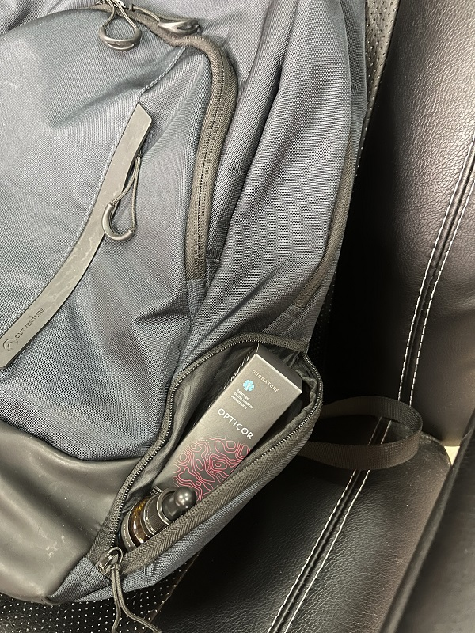
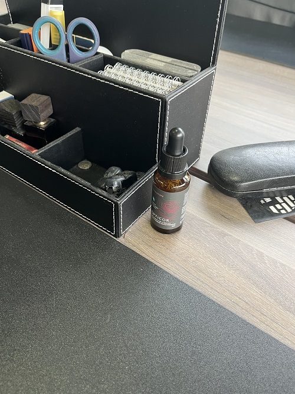
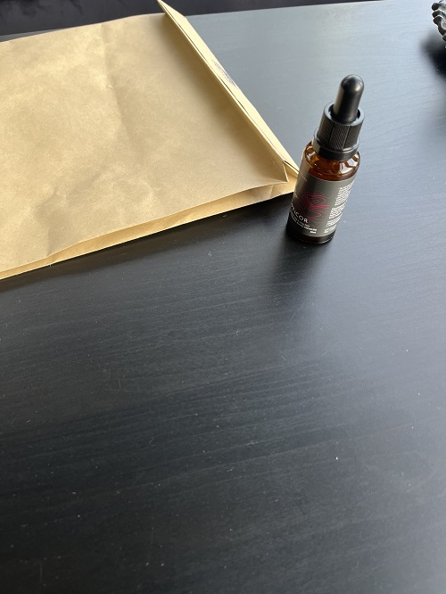
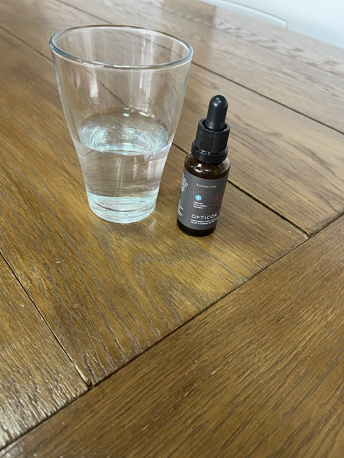

![img]()
Възрастта не е пречка за живота! Известен 99-годишен кардиолог споделя тайната на дълголетието и доброто здраве
ДОКТОР ДИМИТРОВ КАЗВА, ЧЕ ТАЙНАТА НА ДЪЛГОЛЕТИЯ Е В КРЪВОНОСНИТЕ СЪДОВЕ. АКО СА ЧИСТИ И ЗДРАВИ ИМА ШАНС ДА ЖИВЕЕТЕ 24-27 ГОДИНИ ПО-ДЪЛГО!
Известният български кардиолог доктор Иван Димитров спря да практикува на 70-годишна възраст, въпреки че все още беше наистина млад душевно и телесно. Вече 29 години е пенсионер, а пенсионният фонд го мрази! Днес този изключителен професор е на 99 години, но се чувства като на 60.
Д-р Иван Димтров (99 години)
Лекарят е на 99 години, обаче все още е пълен с енергия и всеки ден ходи на работа. Въпреки факта, че
е пенсионер, той консултира други опитни лекари и споделя своя опит.
Зад гърба си има 74 години стаж в кардиологията.
Нашият кореспондент успя да интервюира доктор Димитров, който разказа подробно за своя метод за съдово прочистване и здравословно стареене.
Кореспондентът: Доктор Димитров, много пъти сте казвали, че чистите кръвоносни съдове са в основата на здравето. Как бихте обосновали твърдението си?
Докторът: Всички знаем, че хипертонията, инсултът и инфарктът са резултат от натрупване на плаки в кръвоносните съдове. Малцина обаче знаят, че това е само върхът на айсберга. Запушването на кръвоносните съдове е причина за 7 от 8 нелечими хронични заболявания.
Какво означават запушени кръвоносни съдове? Представете си тръби, запушени с ръжда. Какво се случва с тях? Водата не може да преминава свободно и налягането се повишава. Същото се случва и с кръвоносните съдове. Когато там се натрупат холестерол и други вещества, луменът на съда се стеснява и налягането се повишава (запушените съдове са основната причина за хипертонията!). Нормалният кръвен поток е нарушен. Последицата от това запушване е заболяване на органа, към който е насочен засегнатият съд.
По този начин има постепенно запушване на кръвоносните съдове. Ако никога не сте мислили за почистване на кръвоносните съдове и сте над 40 години, тогава най-вероятно скоро ще възникнат различни здравословни проблеми.
С други думи, съдовото прочистване може да удължи живота ви и да ви помогне да останете здрави. И това не е само теория. Препоръчвам този метод на всички мои пациенти и го прилагам върху себе си. Затова съм в добро здраве на 99 години.
Доктор Димитров (99 години)
На 97 години доктор Димтров се запознал със своята правнучка. Сега момичето е на 3 години: тя много обича своя прадядо и иска да живее още по-дълго от него!
Кореспондентът: Какви заболявания могат да бъдат причинени от «мръсни» кръвоносни съдове?
Докторът: Както казах, страда целият организъм. Но преди всичко страда сърдечно-съдовата система.
Замърсените кръвоносни съдове могат да причинят следните заболявания:
- Атеросклероза. При това заболяване има втвърдяване и загуба на еластичност на стените на артериите поради образуването на плаки, известни като атероми или атеросклеротични плаки, първоначално съставени от липиди, включително холестерол, съдържащи се в кръвта.
- Исхемична болест на сърцето. Това заболяване се характеризира с недостатъчно снабдяване на сърдечния мускул с кръв и кислород, което от своя страна възниква поради запушване на кръвоносните съдове.
- Инсулт. Това състояние се характеризира със затваряне на церебралната артерия, което предотвратява преминаването на кръвта. Това запушване в повечето случаи се причинява от атеросклеротични плаки в съдовете, които носят кръв към мозъка.
- Хипертония. Образуването на плаки в кръвоносните съдове води до стесняване на лумена им и повишаване на кръвното налягане.
- Флеберизъм. Това е много дразнещо и неприятно състояние, особено при жените. Симптомите включват подуване и тежест, изпъкнали или паяжини вени. Хемороидите са също резултат от разширените вени.
- Венозна и артериална тромбоза. Нараняването на стените на вените води до образуване на кръвни съсиреци, което може да доведе до запушване на коронарните артерии (артериалните съдове, снабдяващи сърдечния мускул с кислород) и впоследствие до инфаркт на миокарда, който в 70% от случаите е фатален.
Тези снимки показват опасността за здравето и живота от «мръсните» кръвоносни съдове.
Сърцето на жена, починала от сърдечен арест
53-годишен мъж, получил инсулт.
Инсултът е основната причина за инвалидност в България и пациентите с инсулт се нуждаят от специални грижи. Една от основните причини е запушването на кръвоносните съдове.
Разширените вени, от които страдат много жени, също са пряк резултат от отлагания в кръвоносните съдове.
Тези заболявания стават все по-чести. Сърдечно-съдовите заболявания са една от водещите причини за смъртността у нас. Лекарите знаят за това, знаят, че почистването на кръвоносните съдове е необходимо, но по някаква причина българската медицина пренебрегва такова лечение. В случай на хипертония повечето лекари просто предписват антихипертензивни лекарства. Те обаче не действат върху причината за разстройството, а действат върху следствието, давайки временен ефект. Необходимо е да се прочистят кръвоносните съдове. Между другото, в САЩ и други европейски страни, по-развити от България, този метод се прилага за всеки човек над 35-50 години. По-голямата част от хората в тези страни знаят за необходимостта от прочистване на съдовете. Често се чудех защо това все още не се случва в България.
Кореспондентът: Има ли симптоми, които могат да показват наличието на натрупвания в кръвоносните съдове?
Докторът: Разбира се, че има. Основните симптоми са:
- Мигрена
- Нарушение на паметта
- Хронична умора
- Безсъние
- Сексуални разстройства
- Зрителни и слухови увреждания
- Хипертония
- Затруднено дишане и стенокардия
- Бледа кожа
- Болки в мускулите и ставите
Независимо дали имате един или повече от тези симптоми или не, след 30-годишна възраст е необходимо да се прочистят съдовете. Така ще запазите здравето си.
Всъщност стесняването на кръвоносните съдове се случва доста бързо, особено при по-възрастните хора. Не е нужно да ядете хамбургери или пържени картофи всеки ден. Достатъчно е да ядете малко наденица или пържени яйца, за да се отложи известно количество холестерол и мазнини в кръвоносните съдове. С течение на времето все повече и повече холестерол и възпалителни клетки се натрупват, образувайки атеросклеротични плаки.
Кореспондентът: Бихте ли споделили с нас вашия метод за прочистване на кръвоносните съдове?
Докторът: Доскоро процесът на изработване на препарат за почистване на съдове отнемаше много месеци. Събирах лечебни билки, търсех ги на пазара или ги поръчвах в интернет и след това приготвях средството от тях. Вече не ми се налага да правя това, защото моите колеги от Германския институт за сърдечно-съдови заболявания разработиха ефективен и сравнително евтин препарат за почистване на съдове Opticor. Всъщност този препарат помага за нормализиране на кръвното налягане именно защото почиства толкова добре кръвоносните съдове. Следователно е идеален за нашата цел.
За постигане на максимален ефект и ползи за съдовото и сърдечно здраве, трябва да приемате Opticor редовно.
Искам да подчертая, че капките Opticor не съдържат никакви синтетични вещества: това е добре проучена смес от естествени екстракти, витамини, минерали и мощни антиоксиданти. Препаратът не само помага за пречистването на кръвта и кръвоносните съдове, но е изключително полезен и за здравето на сърцето, като намалява основните рискови фактори за развитието на най-опасните сърдечни заболявания (инсулт, миокарден инфаркт).
Повечето пациенти често се обръщат към мен за съвет как да прочистят съдовете. Препоръчвам този продукт от доста време. Наистина е много ефективен.
Уебсайтът на Изследователския институт по сърдечно-съдови заболявания публикува официална статистика на клиничните изпитвания. Те включват около 2000 пациенти, на които е предписан Opticor.
Резултати от изследването:
- Нормализиране на кръвното налягане - 99% от случаите
- Нормализиране на сърдечната честота в края на лечението - 97% от случаите
- Пълно почистване на кръвоносните съдове от холестерол след лечение - 99% от случаите
- Подобряване на ефективността на лечението на хронични заболявания - 99% от случаите
- Подобряване на общото здравословно състояние - 100% от случаите
- Без нежелани реакции по време на лечението - 100% от случаите
Кореспондентът: Колко струва Opticor и къде мога да го купя?
Всички знаем, че сега пенсиите не ви позволяват да купувате скъпи лекарства, необходими за премахване на тези проблеми. Ето защо не мога да препоръчам такива продукти. Капките Opticor участват в промоцията до до включително.
В този момент всеки може да участва в промоцията и да поръча Opticor безплатно, като трябва само да отговорите на 3 въпроса.
Повече за това как да получите Opticor с доставка до всяка точка на България
За да поръчате Opticor, трябва да:
- Попълнете формата.
- Консултантът ще се свърже с Вас за уточняване на детайлите по поръчката и потвърждение на адреса за доставка.
- След 1-3 работни дни куриерът ще достави Opticor на посочения адрес.
За да поддържате чистотата на съдовете, препоръчвам да повторите цикъла на лечение. Това важи особено за възрастните хора. Това ще помогне за подобряване на здравето, преди всичко на кръвоносните съдове и сърцето, както и ще забави появата на признаци на стареене. Чистите кръвоносни съдове са ключът към доброто здраве.
Кореспондентът: Доктор Димитров, благодарим ви, че изяснихте толкова много важни подробности за нас по време на това интервю.
Лекарят ни призна, че с удоволствие работи в градината и помага на децата си, които вече са навършили пенсионна възраст. Съпругата му също е дългожителница, тя е на 90 години. И двамата редовно използват процедури за почистване на съдовете. Професорът смята, че това е една от основните причини да доживее до 99 години в добро здраве.
и вземете Opticor БЕЗПЛАТНО!
Попълнете полетата по-долу
и щракнете върху
«Вземете Opticor»
Коментари
Надежда Р., София
Благодаря! Тази информация наистина е много интересна. Вече поръчах Opticor.
Дамян, Велико Търново
От седем години страдам от високо кръвно. Тогава по препоръка на новия ми кардиолог се взе решение да допълня медикаментозната си терапия с Opticor. След едномесечно лечение кръвното ми се нормализира! От тогава минаха два месеца. Животът ми се промени напълно. Чувствам се хиляди пъти по-добре. Препоръчвам този прекрасен продукт на всички, той ще бъде страхотна инвестиция във вашето здраве и благополучие!

Петър, Бургас
Завърших едномесечен курс с Opticor. Чувствам се по-здрав, по-силен и по-млад.

Мария, Шумен
Благодаря! Поръчах го! Консултантката беше много любезна, обясни ми всичко за процедурите, избрахме най-подходящата за мен и сега чакам доставката. Нямам търпение да получа този продукт!
Емил, Сливен
Пратката пристигна вчера. Ще направим прочистващата процедура със съпругата ми. Наскоро бяхме тествани и резултатите не са много добри: висок холестерол и триглицериди, ние сме изложени на риск от атеросклероза. Освен това сме с наднормено тегло и високо кръвно налягане.

Андреана, Добрич
Започнах лечение с Opticor миналия месец, защото понякога страдах от скокове на кръвното и имах неправилен сърдечен ритъм. Продължавам лечението, но вече се чувствам много по-добре и откакто пия тези капки, нямам никакво колебание на кръвното!
Красимир
Аз съм на 61 години. За първия път закупих този продукт преди около две години в Германия. Редовно преминавам през цикли на лечение и продуктът ми помага да остана силен и здрав. Аз съм здрав, а много мои колеги вече починаха. Дори правя секс, извенете за такава подробност. Почистването на съдовете е задължително!

Емилия, Търговище
Преди да използвам този продукт, страдах от високо кръвно налягане и други заболявания като диабет и проблеми с бъбреците... Взех много лекарства, които само облекчаваха симптомите, но не можеха да ликвидират причината... Тогава ми препоръчаха Opticor. Това беше първият път, когато поръчах онлайн. Оказа се, че всичко е много просто. Завърших пълния курс и трябва да кажа, че се чувствам много по-добре, нивата на кръвната ми захар, триглицеридите и холестерола се подобриха!
Дияна, Перник
Благодаря! Дори моят лекар казва, че е важно да поддържате кръвоносните си съдове чисти! Вече поръчах този продукт!
Александър, Ловеч
Този продукт е изключително добър! Потвърждавам това! Дълги години кръвното ми беше 140/90. След лечение падна до 125/80. Чувствам се прекрасно!
Тодор, Карлово
Завърших едномесечен курс на лечение. Чувствам се много по-добре. Пълен съм със сила и енергия, дори усетих, че имунната ми система работи по-добре! Съставът на продукта е страхотен! Много полезни вещества и много антиоксиданти! Чувствам се с 10 години по-млад. Аз съм на 72 години.
Мариана, Хасково
И аз започнах лечение с Opticor преди два месеца. Преди, когато имах запушване на кръвоносните съдове, винаги се чувствах много уморена, а сега съм пълна с енергия. През деня успявам да свърша много повече неща. Преди имах адски главоболия, сега ги няма. Спя по-добре. Дори и анализите ми вече са добри! Така поръчах още няколко опаковки за всеки случай. Благодаря!